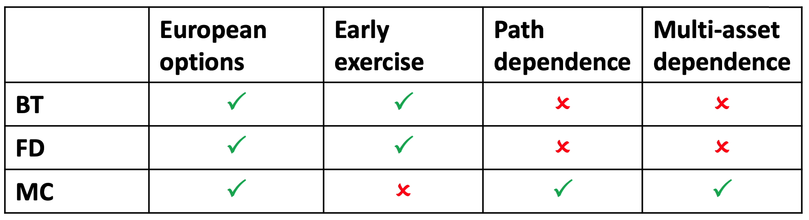
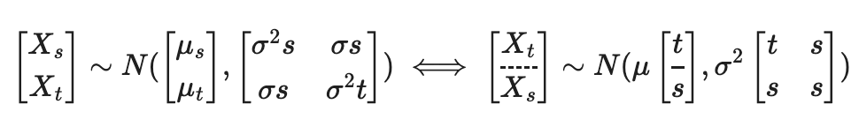
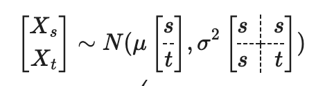
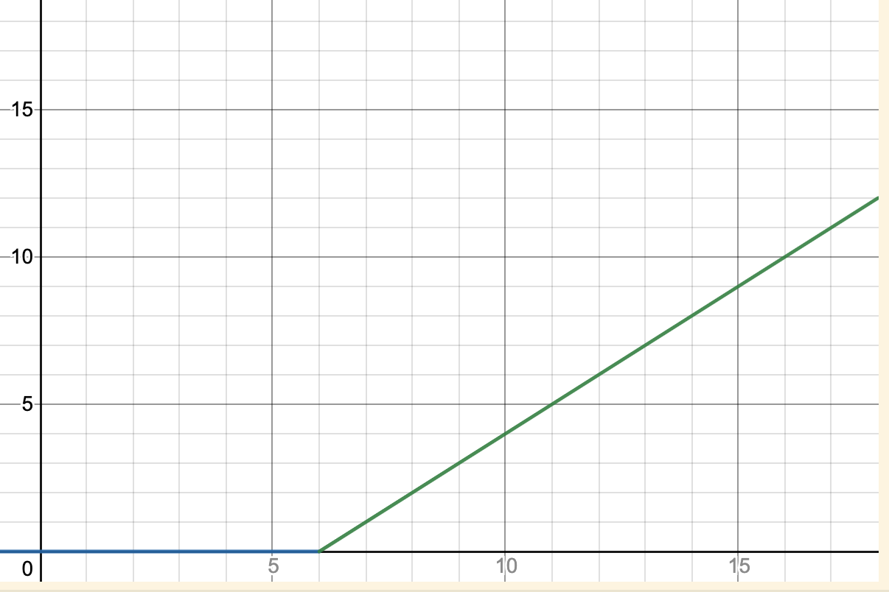
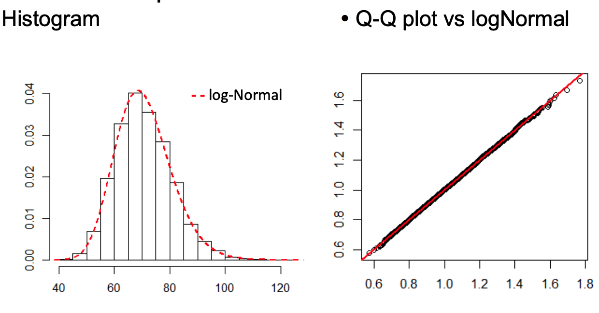
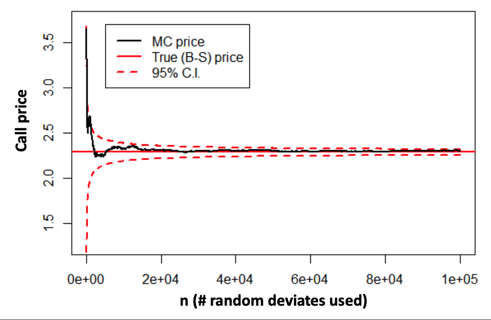
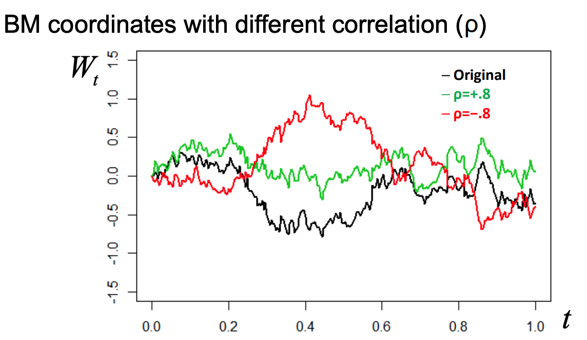
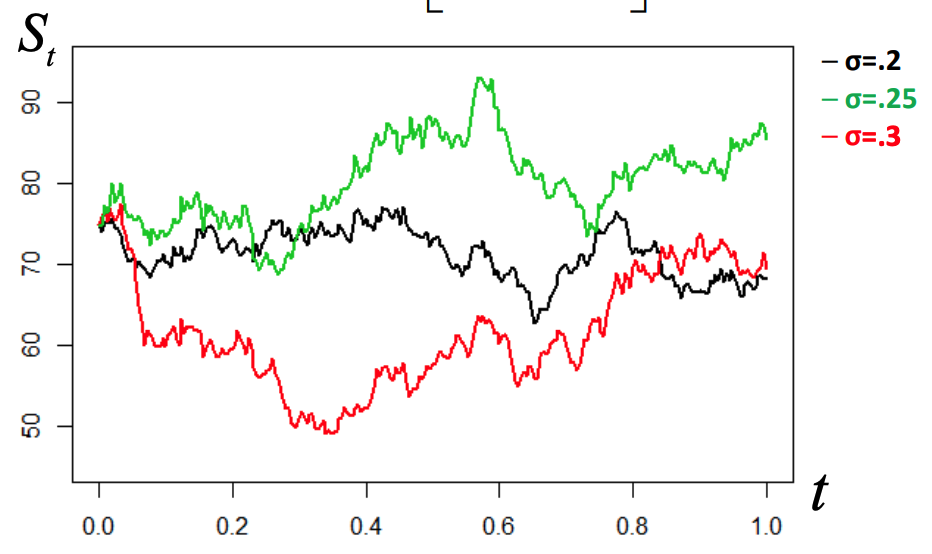
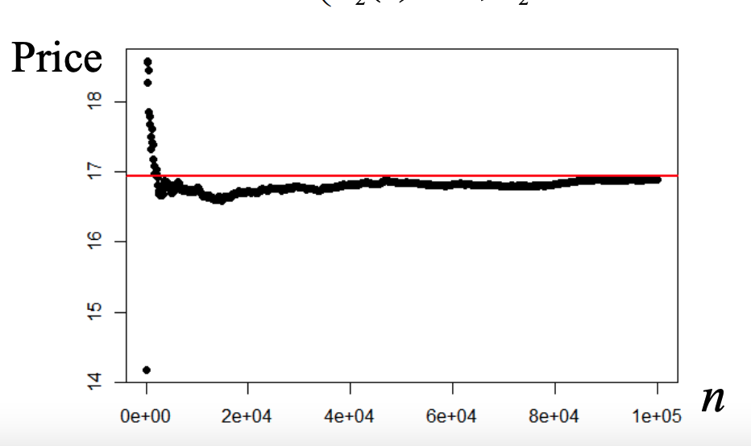

Chapter 12 Monte-Carlo Simulation
Primarily dealing with option pricing. There are three basic numerical option pricing methods:
- Binomial Trees (BT)
- Don’t need sophisticated mathematical or stochastic analysis, just backward induction
- Useful in many cases
- Finite Difference (FD)
- Uses the Black-Scholes PDE
- Not discussed much in the stats program
- Monte-Carlo Simulation
- Based on the stochastic differential equation (determines evolution of asset-price)
- Easy to program and risk-neutral
- Really shines with multiple dimensions (many factors, path/multi-asset)

12.1 Brownian Motion
Any martingale can be represented as an integral of brownian motion.
Brownian Motion (BM) forms the building block of continuous stochastic models Standard BM \(\left\{W_t\right\}\) is such that
\[ W_0=0 \quad \& \quad (W_t-W_s) \mid W_s \sim N(0, t-s) \] Arithmetic BM (ABM) \(\left\{X_t\right\}\) with drift \(\mu\) & volatility \(\sigma\) is
\[ X_0=0 \quad \& \quad \left(X_t-X_s\right) \mid X_s \sim N\left(\mu(t-s), \sigma^2(t-s)\right) \]
- In form of Stochastic Differential Equation (SDE)
\[ d X_t=\mu d t+\sigma d W_t \Leftrightarrow X_t-X_0=\mu t+\sigma\left(W_t-W_0\right) \]
12.2 Properties of the Multivariate Normal
If
\[
\mathbf{X}=\left[
\begin{array}{c}
\mathbf{X}_1 \\
\mathbf{X}_2 \\
\end{array}
\right]
\sim \mathbf{N}\left(\boldsymbol{\mu}=\left[
\begin{array}{c}
\boldsymbol{\mu}_1 \\
\boldsymbol{\mu}_2
\end{array}
\right],
\boldsymbol{\Sigma}=\left[
\begin{array}{cc}
\boldsymbol{\Sigma}_{11} & \boldsymbol{\Sigma}_{12} \\
\boldsymbol{\Sigma}_{21} & \boldsymbol{\Sigma}_{22}
\end{array}\right]
\right)
\]
 , then:
, then:
| Property | Formula |
|---|---|
| Marginals: | \[\quad \mathbf{X}_1 \sim \mathbf{N}\left(\boldsymbol{\mu}_1, \boldsymbol{\Sigma}_{11}\right)\] |
| Linear combinations: | \[\mathbf{a}+\mathbf{B}^{\top} \mathbf{X} \sim N\left(\mathbf{a}+\mathbf{B}^{\top} \boldsymbol{\mu}, \mathbf{B}^{\top} \boldsymbol{\Sigma} \mathbf{B}\right)\] |
| Conditionals : | \[\mathbf{X}_1 \mid\left(\mathbf{X}_2=\mathbf{x}\right)\sim\mathrm{N}\left(\boldsymbol{\mu}_1+\boldsymbol{\Sigma}_{12}\boldsymbol{\Sigma}_{22}^{-1}\left(\mathbf{x}\boldsymbol{\mu}_2\right),\boldsymbol{\Sigma}_{11}-\boldsymbol{\Sigma}_{12}\boldsymbol{\Sigma}_{22}^{-1}\boldsymbol{\Sigma}_{21}\right)\] |
If \(\Sigma_{12}=0\) then \(\mathbf{X_{1}}|\mathbf{X_{2}}=x \sim N(\mu_{1},\Sigma_{11})\)
Using these properties, we can do calculations for brownian motion
12.2.1 Ex: Distribution given X_s
Finding the distribution of \(X_{t}|X_{s} = x, t>s\) for \(dX_{t} = \mu dt+\sigma dW\) \[ \begin{aligned} \left[ \begin{array}{c} X_{s} \\ X_{t} \end{array} \right] \sim N( \left[ \begin{array}{c} \mu_{s} \\ \mu_{t} \end{array} \right], \left[ \begin{array}{cc} \sigma^{2}s & \sigma s \\ \sigma s & \sigma^{2}t \end{array} \right] ) \end{aligned} \iff \left[ \begin{array}{c} X_{t} \\ X_{s} \end{array} \right] \sim N(\mu \left[ \begin{array}{c} t \\ \hline s \end{array} \right], \sigma^{2} \left[ \begin{array}{cc} t & s \\ s & s \end{array} \right] ) \]  Because \[ \begin{aligned} Cov(W_{s},W_{t}) &= Cov(W_{s}, W_{s}+(W_{t}-W_{s}))\\ &= Cov(W_{s}, W_{s}) + \underbrace{ Cov(W_{s}, (W_{t}-W_{s})) }_{ =0 }\\ &= Var(W_{s}) = s \end{aligned} \]
Which gives: \[ \begin{aligned} X_{t} | X_{s} = x &\sim N\left( \mu t + \sigma^{2}s \frac{1}{\sigma^{2}s} (x-\mu s), \sigma^{2}\left( t-s \frac{1}{8}8 \right) \right)\\ &\sim N(x + \mu (t-s), \sigma^{2}(t-s)) \end{aligned} \]
12.2.2 Ex: Brownian Bridge (Distribution given X_t)
Find the distribution of \(X_{s} | X_{t} = x, s\in (0,t)\) for \(dX_{t} = \mu dt + \sigma dW_{t}\)
\[ \begin{aligned} \left[ \begin{array}{c} X_{s} \\ X_{t} \end{array} \right] &\sim N(\mu \left[ \begin{array}{c} s \\ t \end{array} \right], \sigma^{2} \left[ \begin{array}{cc} s & s \\ s & t \end{array} \right] )\\ \end{aligned} \]  \[ \begin{aligned} \implies X_{s} | X_{t} = x &\sim N\left( \underbrace{ \mu s+\frac{s}{t}(x-\mu t) }_{ \mu s+\frac{s}{t}x-\mu s }, \sigma^{2}\left( s-\frac{s}{t}s \right)\right)\\ &\sim N\left( \frac{s}{t}x, \sigma^{2} \frac{s(t-s)}{t}\right) \end{aligned} \]
May be useful for generating brownian motion paths where I know that at time \(T\), I have value of \(x\).
12.3 Geometric Brownian Motion
A transformation of the arithmetic brownian motion. We use this to avoid negative values.
Process \(\left\{S_t\right\}\) whose logarithm follows ABM \[ \begin{aligned} & \log \left(S_t\right)-\log \left(S_0\right)=\log \left(\frac{S_t}{S_0}\right)=X_t \sim N\left(\mu t, \sigma^2 t\right) \Leftrightarrow \\ & \Leftrightarrow S_t=S_0 \exp \left\{X_t\right\} \sim S_0 \times \log \operatorname{Normal}\left(\mu t, \sigma^2 t\right) \end{aligned} \]
As the log of \(\exp \left\{ X_{t} \right\} = X_{t}\) and \(X_{t} \sim Normal(\mu t, \sigma^{2}t)\)
Expressed in terms of SDE: \[ d X_t=d \log \left(S_t\right)=\mu d t+\sigma d W_t \Leftrightarrow d S_t=\left(\mu+\frac{\sigma^2}{2}\right) S_t d t+\sigma S_t d W_t \]
12.4 Risk-Neutral Pricing
- Assuming Geometric BM for asset \(\left\{S_t\right\}\) and risk-free interest rate \(r\), there exists a probability measure such that
- \[ d S_t=r S_t d t+\sigma S_t d W_t \Rightarrow S_t \sim S_0 \times \log N\left(\left(r-\frac{\sigma^2}{2}\right) t, \sigma^2 t\right)\]
- Under this measure, discounted asset prices are martingales
- Called risk-neutral (RN) or equivalent martingale measure
- The arbitrage-free price of any European derivative with payoff \(G_T=f\left(S_T\right)\) is given by discounted expectation w.r.t. RN measure \[ G_0=\mathbb{E}\left[e^{-r T} G_T\right]=\mathbb{E}\left[e^{-r T} f\left(S_T\right)\right] \]
We just need to figure out that expected value to obtain the price at time \(0\).
12.4.1 Ex: RN Pricing
We’ll show that under risk-neutral pricing measure,
\[ \mathbb{E}(S) = S_{0}e^{rt} \] (a martingale) then we would have
\[ \mathbb{E}\left( \frac{S_{t}}{e^{rt}}\right) = S_{0} \quad \text{ or more generally } \mathbb{E}\left( \frac{S_{t}}{e^{rt}} |S_{s} \right) = \frac{S_{s}}{e^{rt}} \] Proof: \[ \begin{aligned} \mathbb{E}(S_{t}) &= \mathbb{E}(S_{0}e^{\log(S_{t}/S_{0})})\\ &= S_{0}\mathbb{E}(e^{Y}) \text{ where } Y=\log\left( \frac{S_{t}}{S_{0}} \right) \sim N\left( \left( r-\frac{\sigma^{2}}{2} \right)t, \sigma^{2}t \right)\\ \end{aligned} \]
We can use the Normal MGF \(\mathbb{E}(e^{X})\) if \(X\sim N(\mu, \sigma^{2})\): \[ m_{X}(z) = e^{\mu z+(1/2) \cdot \sigma^{2}z^{2}} \]
In this case, we have \[ \begin{aligned} m_{Y}(1) = \exp \left\{ \overbrace{ \left( r-\frac{\sigma^{2}}{2} \right) }^{ \mathbb{E}(Y) } t + \overbrace{ \frac{1}{2} \sigma^{2}t }^{ \mathbb{V}(Y) }\right\} = \exp \left\{ rt-\frac{\sigma^{2}}{2} t + \frac{\sigma^{2}}{2} t\right\} = S_{0}e^{rt} \end{aligned} \]
12.4.2 Ex: Find price of forward contract (no dividends)
\[ G_{T} = f(S_{T}) = (S_{T} - F_{0,T}) \quad \text{ where } F_{0,T} = S_{0}\cdot e^{rT} \]
We know \(G_{0}=0\) (forward contracts involve no cashflow at \(t=0\))
By the RN pricing: \(G_{0} = \mathbb{E}[e^{-rT}G_{T}]\)
\[ \begin{gathered} \implies 0 = \mathbb{E}\left[\underbrace{ e^{-rT} }_{ \text{const, can remove} } (S_{T}-F_{0,T}) \right]\\ \implies 0=\mathbb{E}(S_{T}) - F_{0,T}\\ \implies F_{0,T} = \mathbb{E}(S_{T}) = e^{rT}\mathbb{E}(\underbrace{ e^{-rT}S_{T} }_{ S_{0}e^{rT} = S_{T} \sim mtgl}) = e^{rT}S_{0} \end{gathered} \]
12.4.3 Estimating Expectations
If \(\mathbb{E}(e^{-rT}f(S_{t}))\) cannot be calculated exactly, it can be estimated/approximated by simulation.
- Generate # N independent random variates \(S_{i}(T), i=1,\dots,N\) based on RN measure
- By Strong LLN
- \[ \hat{G}_{0} = \frac{1}{N} \sum^{N}_{i=1}e^{-rT}f(S_{i}(T)) \to \mathbb{E}(e^{-rT}f(S_{T})) \] with probability 1
- By the CLT
- \[ \frac{\hat{G}_0-G_0}{s_G / \sqrt{n}} \sim^{a p p r} . N(0,1), \text { where } s_G^2=\frac{1}{n-1} \sum_{i=1}^n\left[e^{-r T} f\left(S_i(T)\right)-\hat{G}_0\right]^2 \]
If you can express the quantity you’re looking for as an expected value, you can run a simulation and it will approximate the value you’re looking for
How do you run a simulation experiment to approximate a probability? \(\mathbb{P}(A)=\mathbb{E}(I_{A})\) the indicator variable of a given event \(A\).
12.4.4 Ex: Show estimator is consistent
Estimator: \(\mathbb{E}[e^{-rT}f(S_{T})]\)
Build a 95% confidence interval for \(G_{0}\) as well \[ \begin{aligned} \mathbb{E}(\hat{G_{0}}) &= \mathbb{E}\left[ \frac{1}{n}\sum^{n}_{i=1} e^{-rT}f(S_{i}(T)) \right]\\ &= \frac{1}{n}\sum^{n}_{i=1}\underbrace{ \mathbb{E}[e^{-rT}f(S_{i}(T))] }_{ G_{1}? } = \frac{1}{n}nG_{0} = G_{0} \end{aligned} \]
Confidence interval: \[ \hat{G_{0}} \pm 1.96 \times \frac{SG}{\sqrt{ n }} \]
Need 4 times the samples to double the accuracy (scaled by \(\sqrt{ n }\))
12.5 European Call
Estimating European call price w/ simulation
- Asset price dynamics: \(dS_{t} = rS_{t}dt +\sigma S_{t}dW_{t}\)
- Payoff function for strike \(K\) and maturity \(T\): \(f(S_{t})=(S_{T} - K_{T})\)
Generate random asset price variates as: \[ S_i(T)=S(0) \times \exp \left\{\left(r-\frac{\sigma^2}{2}\right) T+\sigma \sqrt{T} \times Z_i\right\} \] where \(Z_i\) is standard Normal variate
Where the x-axis is \(S_t\), and y-axis is the payoff \(G_{t}\)
top=19;bottom=-1;left=-1;right=18
---
y=0|x<k
y=x-k|x>=k
k=6
After simulation, we get asset-prices that follow:

And we can see that the Monte Carlo simulated price converges to the true price:

When model options with depend on multiple assets, we need to consider those assets in the model.
12.6 Multiple Assets
The payoff of some options depends on the prices of multiple assets.
E.g. Exchange (outperformance) option w/ payoff \[ max \left\{ S_{1}(T) - S_{2}(T), 0 \right\} = (S_{1}(T)-S_{2}(T)) \]
MC option pricing requires simulating & averaging multiple asset prices/paths - Cannot simply simulate each asset separately - Need to consider cross-asset dependence
Assets may have cross-asset dependence, so we cannot simply just simulate each asset independently until time \(T\).
12.6.1 Multivariate Brownian Motion
Define \(d\)-dimensional standard BM \(\mathbf{W}(t)=\left[\begin{array}{c}W_1(t) \\ \vdots \\ W_d(t)\end{array}\right]\) with correlation matrix \(\boldsymbol{\rho}=\left[\begin{array}{ccc}1 & \ldots & \rho_{1 d} \\ \vdots & \ddots & \vdots \\ \rho_{d 1} & \cdots & 1\end{array}\right]\) to have independent Normal increments \[ \mathbf{W}(t)-\mathbf{W}(s) \mid \mathbf{W}(s) \sim N_d(\mathbf{0},(t-s) \boldsymbol{\rho}) \] - Note: increments are independent over time, but can be dependent across dimensions!
Increments are independent of the past, and follow a \(d\) dimensional normal with mean 0, with the corr mat being the cov matrix multiplied by time (proportional to time).
3-dimensional standard Brownian Motion

12.6.2 Multivariate Arithmetic BM
- \(\{\mathbf{X}(t)\} \ w / \operatorname{SDE} \ d \mathbf{X}(t)=\mu d t+\sigma d \mathbf{W}(t)\), where \[ \boldsymbol{\mu}=\left[\begin{array}{lll} \mu_1 & \cdots & \mu_d \end{array}\right]^{\top}, \boldsymbol{\sigma}=\left[\begin{array}{lll} \sigma_1 & \cdots & \sigma_d \end{array}\right]^{\top} \] \(\{\mathbf{W}(t)\} \sim d\)-dim. standard BM W/ correlations \(\rho\)
- \(\mathbf{X}(t)-\mathbf{X}(s) \mid \mathbf{X}(s) \sim N_d((t-s) \boldsymbol{\mu},(t-s) \boldsymbol{\Sigma})\), where \[ \boldsymbol{\Sigma}=\left[\left\{\sigma_i \sigma_j \rho_{i j}\right\}_{i, j=1}^d\right]=\left[\begin{array}{ccc} \sigma_1^2 & \cdots & \sigma_1 \sigma_d \rho_{1, d} \\ \vdots & \ddots & \vdots \\ \sigma_1 \sigma_d \rho_{1, d} & \cdots & \sigma_d^2 \end{array}\right]=\left(\boldsymbol{\sigma}^{\boldsymbol{\top}}\right) \circ \boldsymbol{\rho} \]
How to go from a univariate uniform and invert to a multivariate distribution? We show for multivariate normal below:
12.7 Cholesky Factorization
Analog for square root for positive definite matrices
Simple way to generate correlated Normal variates from independent ones:
If \(\mathbf{Z} \sim N_d(\mathbf{0}, \mathbf{I})\) and \(\boldsymbol{\Sigma}=\mathbf{L L}^{\top}\) is the Cholesky factorization of the covariance matrix \(\Sigma\), then \(\mathbf{X}=\mathbf{L} \mathbf{Z} \sim N_d(\mathbf{0}, \boldsymbol{\Sigma})\) - Note: \(\mathbf{L}\) is lower diagonal \(\mathbf{L}=\left[\begin{array}{ccc}l_{11} & \cdots & 0 \\ \vdots & \ddots & \vdots \\ l_{d 1} & \cdots & l_{d d}\end{array}\right]\) - \(\mathbb{V}(L\cdot Z) = \underline{L} \underbrace{ \mathbb{V}(\underline{Z}) }_{ I }\underline{L}^{T}=\underline{L}\cdot \underline{L}^{T} = \underline{\Sigma}\)
So the process goes: - Get \(d\) uniforms - Apply a linear transformation
12.7.1 Example
\[ \begin{aligned} \left[ \begin{array}{c} W_{1} \\ W_{2} \\ W_{3} \end{array} \right] &\sim N\left(\underline{0}, \left[ \begin{array}{ccc} 1 & 1 & 1 \\ 1 & 2 & 2 \\ 1 & 2 & 3 \end{array} \right] \right)\\ \\ \text{Let } L &= \left[ \begin{array}{ccc} 1 & 0 & 0 \\ 1 & 1 & 0 \\ 1 & 1 & 1 \end{array} \right] \implies \Sigma = L \times L^{T} = \left[ \begin{array}{ccc} z_{1} \\ z_{1}+z_{2} \\ z_{1}+z_{2}+z_{3} \end{array} \right]\\ \\ \implies Z_{i} &\sim N(0, \Sigma) \end{aligned} \]
12.7.2 Multivariate Geometric BM
\(\{\mathbf{S}(t)\} w / \operatorname{SDE} d \mathbf{S}(t)=\mu \circ \mathbf{S}(t) d t+\sigma \circ \mathbf{S}(t) d \mathbf{W}(t)\) - Solution given by \(\mathbf{S}(t)=\exp \{\mathbf{X}(t)\}\) where \[ d \mathbf{X}(t)=\left(\boldsymbol{\mu}-\boldsymbol{\sigma}^2 / 2\right) d t+\boldsymbol{\sigma} d \mathbf{W}(t) \] Generate geometric BM variates as \[ \begin{aligned} & \mathbf{S}\left(t_i\right)=\mathbf{S}\left(t_{i-1}\right) \circ \exp \left\{\left(\boldsymbol{\mu}-\frac{\boldsymbol{\sigma}^2}{2}\right) \Delta t+\mathbf{L} \mathbf{Z}_i \sqrt{\Delta t}\right\}, i=1, \ldots, m \\ & \text { where } \mathbf{Z}_i \sim^{i i d} N_d(\mathbf{0}, \mathbf{I}), \mathbf{L} \mathbf{L}^{\top}=\mathbf{\Sigma}=\left(\boldsymbol{\sigma} \boldsymbol{\sigma}^{\top}\right) \circ \mathbf{\rho} \end{aligned} \]
Example \[ \text { Geometric BM paths w/ } \rho=\left[\begin{array}{ccc} 1 & .4 & .4 \\ .4 & 1 & .4 \\ .4 & .4 & 1 \end{array}\right] \] 
Exchange option MC price \[ \left(\begin{array}{l} S_1(0)=50, \sigma_1=.4 \\ S_2(0)=35, \sigma_2=.3 \end{array}, r=3 \%, \rho=.3\right) \]
